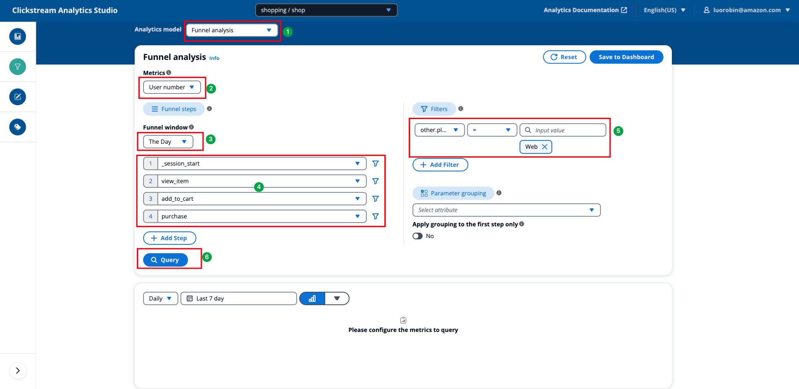

漏斗分析
漏斗分析，或称转化分析，主要用于分析用户在指定过程中的转化状态。该模型首先将整个过程分解为步骤，然后计算从每个步骤到下一个步骤的转化率。它可用于衡量每个步骤的性能。
用例
漏斗分析通常用于分析用户行为，例如：
- 产品中关键流程的转化率分析：例如从订单到购买率、注册完成率；
- 促销的转化率分析：例如不同应用内促销位的转化率；
- 营销渠道效果分析：例如由不同广告活动带来的新用户的购买率。
关键概念
- 指标：用于漏斗分析的实体，例如事件数量或用户数量。
- 漏斗：漏斗是表示过程的一系列事件，它至少包含两个事件，每个事件代表漏斗中的一步。
- 漏斗窗口：漏斗窗口是用户完成整个过程的时间。只有在用户在设置的窗口期内完成所有选定的步骤，才算是成功转化。
如何使用
- 选择指标类型。
- 用户数量：计算通过整个漏斗的不同用户数量。
- 事件数量：计算整个漏斗完成的次数。
- 配置漏斗窗口。
- 自定义：您可以定义任何持续时间作为漏斗窗口。
- 天：在第一步的同一日期内完成漏斗。
- 选择事件作为步骤，单击
+添加步骤按钮以添加更多步骤。您最多可以添加 10 个步骤。 - 单击 以过滤事件。只有符合过滤条件的事件才会计入漏斗。您可以为一个事件添加多个过滤器。
- 如有需要，通过选择事件参数或用户属性配置全局过滤器。与事件过滤器类似，您可以添加多个全局过滤器并配置过滤器关系。
-
如有需要，通过选择事件参数或用户属性配置分组。
Note
漏斗可视化不支持分组，如果需要对漏斗结果进行分组，请选择条形图。
-
如果只想在第一个事件上应用分组，请切换到
仅对第一步应用分组。如果未选择此选项，则分组将应用于漏斗中的所有步骤，这意味着所有事件都应具有用于分组的参数或属性。 - 单击
查询按钮开始分析。 - 如有需要，调整数据粒度，例如
每天、每周、每月。 - 如有需要，调整查询时间范围。
- 单击
保存到仪表板将分析保存到仪表板，输入名称、描述，并选择仪表板和工作表。
示例
计算过去一周内在 Web 上从打开网站 -> 查看产品详情页 -> 添加到购物车 -> 支付的用户的转化率。
- 选择 漏斗分析 模型。
- 选择
用户数量作为指标。 - 在左侧 定义漏斗 区域，选择
天作为漏斗窗口。 - 选择
_session_start、view_item、add_to_cart、purchase作为漏斗事件。 - 在右侧 过滤器 区域配置全局过滤器：
- 选择
other.platform作为过滤器属性。 - 操作：
= - 值：
Web
- 选择
- 点击 查询。
所有配置如下图所示： 
{kind=link}